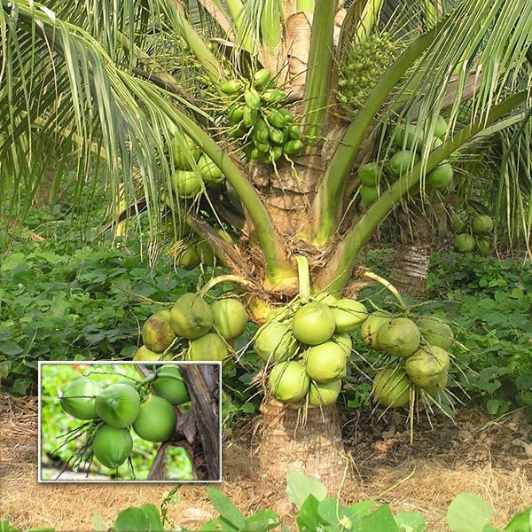

About Coconut Tree
The coconut tree (Cocos nucifera) is known as the “Tree of Life.” Almost every part of it is useful – from fruits, leaves, trunk, and roots.
Uses of Coconut Tree:
- Coconut for oil & food products
- Leaves for roofing & baskets
- Trunk for furniture
- Coir for ropes and mats
Picture of Coconut Tree:
Care of coconut tree
Coconut tree maintenance includes regular watering (especially during dry spells, using basins for mature trees), proper fertilization with organic and chemical nutrients, and consistent pest and disease management. Other key practices are mulching, weeding, clearing soil from the base, and carefully pruning only dead leaves, as improper pruning can damage the tree. For young trees, adequate shade, staking, and a focus on root development with organic nutrients are crucial.
Watering and irrigation
Mature trees: Water young palms in basins of about 1.8 meters radius and 10-20 cm depth, and give an adult palm 600-800 liters of water every 4-7 days, varying by soil and climate.Young trees: Irrigate seedlings at 45 liters every 4 days during dry months.
Method: Drip irrigation is the most efficient method, saving water and labor. If starting irrigation, continue it regularly to avoid yield setbacks.
Water source: In coastal areas, seawater can be used for adult palms, but not for seedlings under two years old.
Fertilization and soil management
Nutrients: After the fifth year, apply 50 kg of manure (FYM, compost, or green manure) annually, along with fertilizers such as urea, super phosphate, and muriate of potash, in two splits during June-July and December-January.Application: Spread fertilizers in a circular basin 1.8 meters from the trunk, incorporate into the soil, and then irrigate.
Young trees: Use organic nutrients like bunny manure or worm tea to encourage root development.
Soil: Clear the pits of weeds periodically and widen them each year as the seedlings grow.
⬅ Back to Home